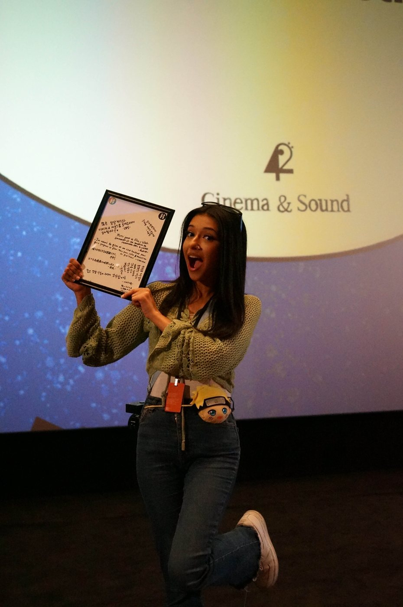
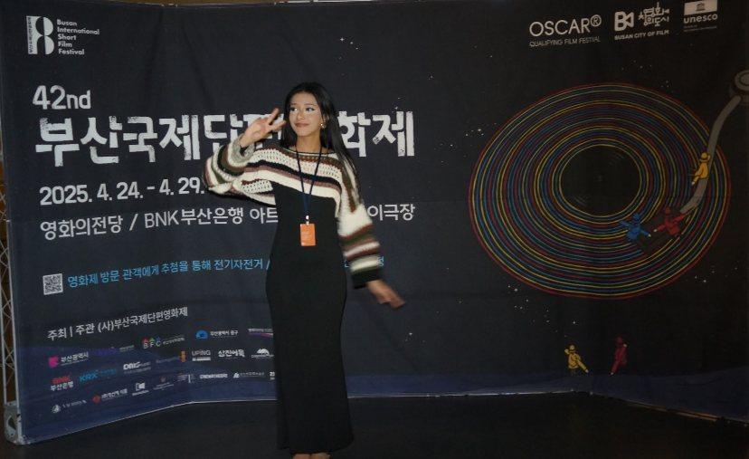

MON RÔLE
- Membre de l'Operation Team du festival
- Coordination logistique des cérémonies
- Couverture photo & vidéo et création de contenu pour les réseaux sociaux du festival
- Suivi opérationnel sur le terrain des événements du festival
- Présentatrice d'événements annexes
•
Sur le terrain

